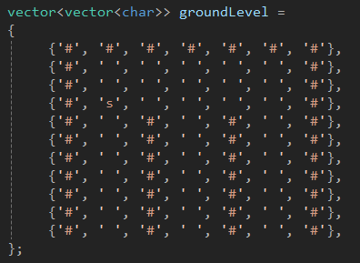

Tower RPG

I've been working through the excellent LearnOpenGL website and once I got to the chapter where you place 3D cubes on the screen I thought "Surely this is enough to make a game now right?"
I laid down some blocks, slapped an old castle brick texture on them and achieved the above image.
It reminded me of Dungeons & Dragons: Warriors of the Eternal Sun for the Mega Drive. A game I remember finding a bit too hard back in the day. (In fairness, I was four.)
Instead of dusting off the mega drive I figured it would probably be easier to try and make my own dungeon crawling game.
The Basics
I went back to the tutorial and modified the camera code to create something akin to first person dungeon crawlers. You can go forward, backward and rotate left and right.
It was surprisingly satisfying to walk around this little grid of cubes I'd built, but there was a problem. The cube positions were all hard coded in a vector array. I wanted something a little easier to play with so I ditched it for a simple 2D char array instead.

Because the game is grid based, every square will take up the same amount of space. This means I don't actually need to explicitly specify the x, z positions. I can just move one unit along and down the array. Different characters represent different tiles. So currently '#' marks the wall and 's' marks the player's starting position.

Here is the very simple code that loops through the array and renders the code. It also adds on a roof and floor.
Although I may want to do that manually as the project moves one.

Here is the actual contents of RenderCube()

The Map Format
Something that got me excited about this format is that you could build maps using nothing but plain text! As a programmer, this means getting to use more Vim or Emacs. But for everyone else it means building maps that would be very easy to share. You could just copy paste a map into discord and your friends would have instant access too it. It would also make building a website that could host a bunch of user generated maps fairly trivial.
The only flaw with this plan is that editing text files this way kinda sucks. Even with a monospaced font it can be a real pain to just keep everything aligned. It sounded great on paper, but making any kind of meaningful edit felt fragile. If only there was a better way.
Enter Tower Tool!

Tower Tool is a WPF app I've started working on that will allow me to draw these maps in a more user friendly GUI-based way. Essentially you get a grid and some brushes, then you can just paint in the grid.
Here's the map from earlier, drawn using the tower tool.

Now that's a lot nicer to look at, and much easier to make maps with. Once the map is ready it can be exported to a text file that Tower RPG will eventually be able to load in. Here is the same map in all the various formats.

Almost There
We've almost created a tool to help the development of our new game much easier. We still have one last step: wiring it all up! Currently we're still just reading that raw string literal.
I'll be back when everything's "plugged in".
-Tosh